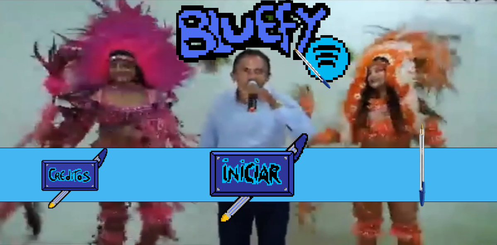
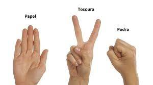
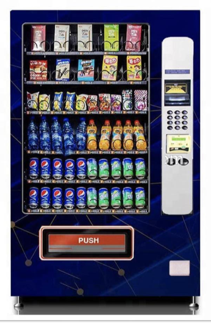

Quem é?
Tiago de Brito Follador, nascido em 28 de setembro de 2005 em
Curitiba, é um jovem estudante de Ciência da Computação no primeiro
período. Ele é um entusiasta da tecnologia desde cedo, sempre
buscando explorar e compreender o mundo digital que o cerca.
Atualmente, Tiago estuda na Pontifícia Universidade Católica do
Paraná (PUCPR), onde se dedica aos estudos teóricos e práticos
relacionados à sua área de interesse.
O que ele fez?
Participação como roteirista no jogo "Puncher"
Tiago desempenhou um papel importante como roteirista neste emocionante jogo. Sua criatividade e habilidades de escrita ajudaram a dar vida à história envolvente e às narrativas do jogo.
Contribuição no desenvolvimento do "Bluefy"
Tiago foi parte integrante da equipe responsável pela criação do aplicativo "Bluefy". Ele ajudou a implementar recursos e funcionalidades, garantindo uma experiência de usuário suave e intuitiva.

Criação de um jogo de jokenpô com seu amigo Lucas Gasperin:
Demonstrando sua paixão por jogos e programação, Tiago e seu amigo Lucas Gasperin uniram forças para desenvolver um divertido jogo de jokenpô. Eles combinaram suas habilidades e conhecimentos para criar uma experiência de jogo cativante e envolvente.

Atualmente trabalhando em uma máquina de bebidas junto com Lucas Gasperin:
No momento, Tiago e Lucas estão envolvidos em um projeto emocionante, desenvolvendo uma máquina de bebidas inovadora. Eles estão aplicando seus conhecimentos de programação e engenharia para criar uma solução eficiente e prática, que atenda às necessidades dos usuários e do mercado.
